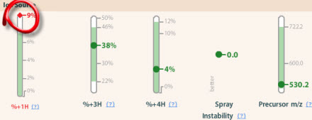
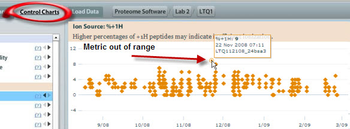
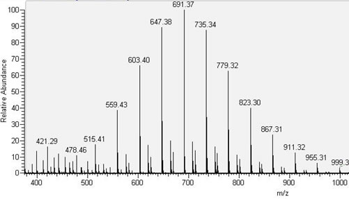

It is common in mass spectrometry labs to use a variety of chemical agents to modify or otherwise help with the preparation of your tryptic digests . We use Dithiothreitol (DTT) to reduce the disulfide bonds in proteins as well as Iodoacetic Acid (IAA) or Iodoacetamide (IA) to alkylate these cysteine residues to keep the protein unraveled for analysis.
Another common reagent used in Biochemistry labs is Polyethylene Glycol (PEG) . PEG is also a by-product of the production of Triton, and a common degradation product. PEG has been observed coming from low-binding pipette tips, which have been exposed to acidic conditions, as well as many other older or degraded plastic products. Unfortunately, PEG is considered a contaminant, and it can frustrate the mass spectrometrist. PEG often can cause metrics such as Percent +1H Ions and MS1 Peak Intensity to increase. If you don't know what you are looking for, this polymer can lead to considerable contamination.
We start in this example with an increase in the percentage of +1H Ions :

Upon closer examination, we see in the Control Charts that this increase is indeed a result of PEG contamination (from a substance such as Triton X-100):

And to confirm this diagnosis, we look to the characteristic PEG fragmentation (m/z difference of 44 Da) mass spectrum:
